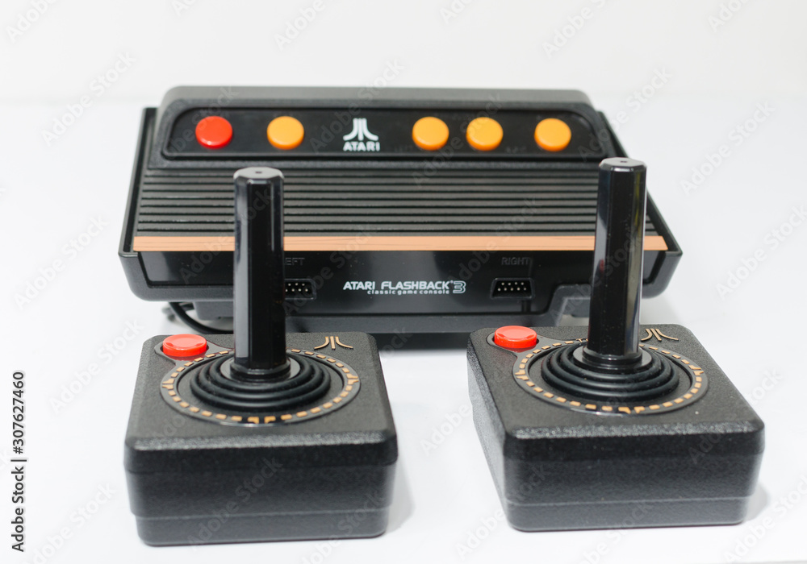
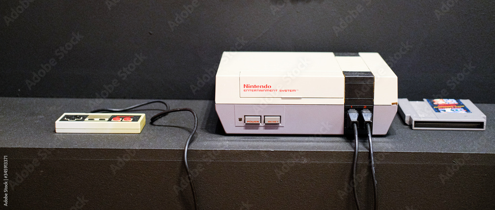
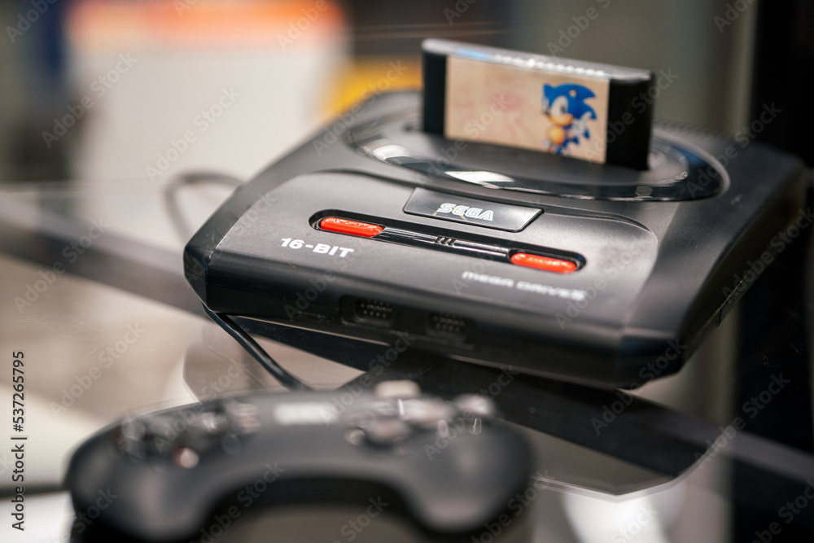
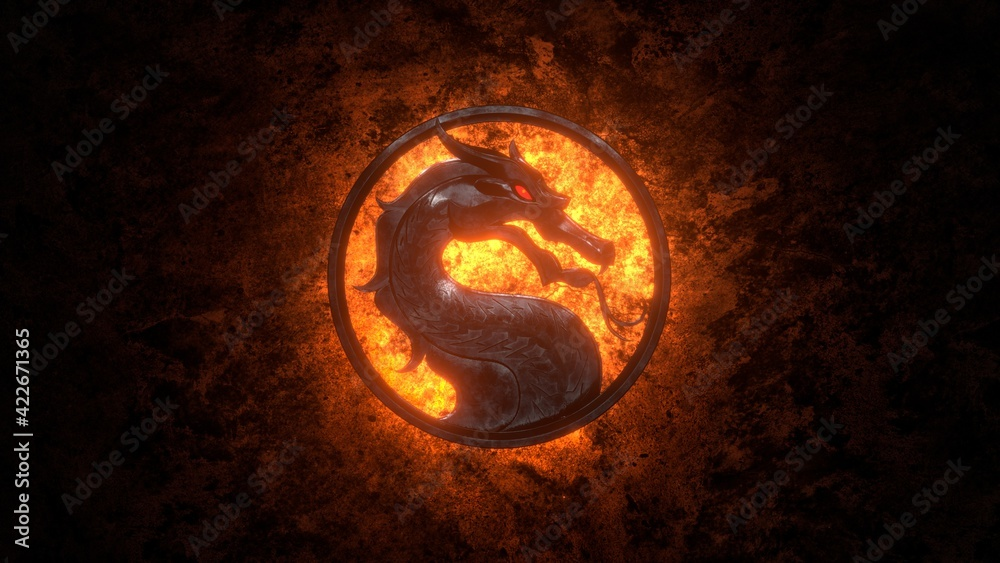
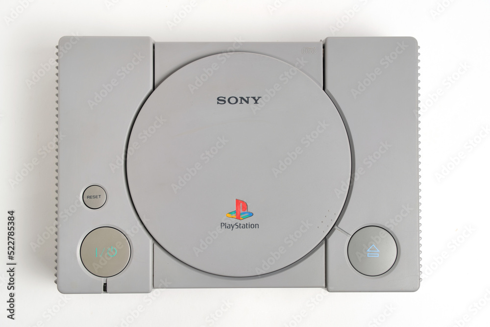
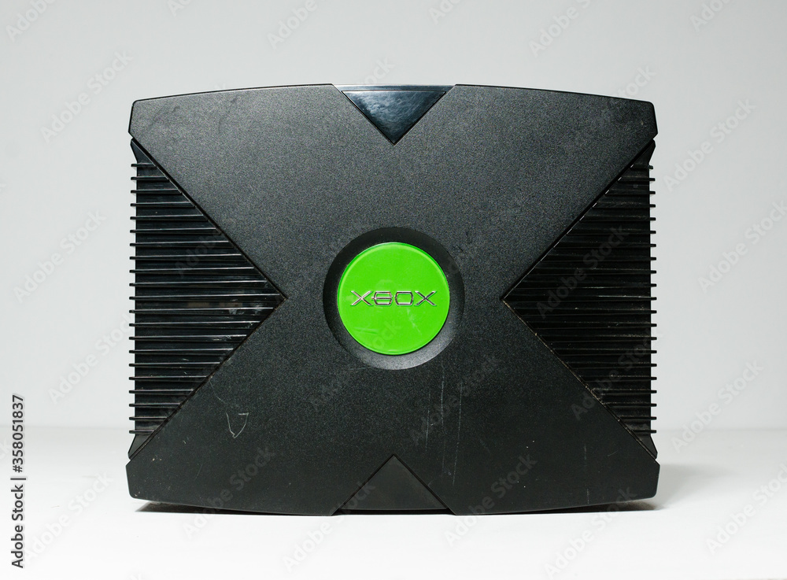
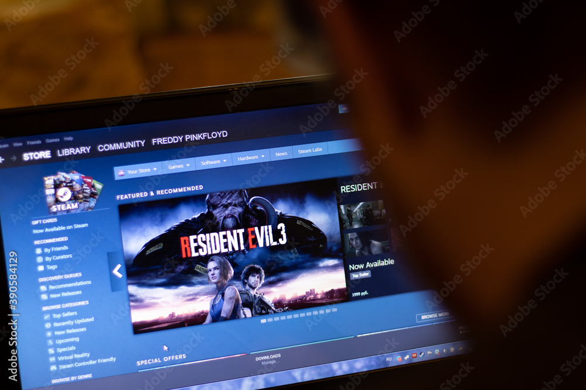
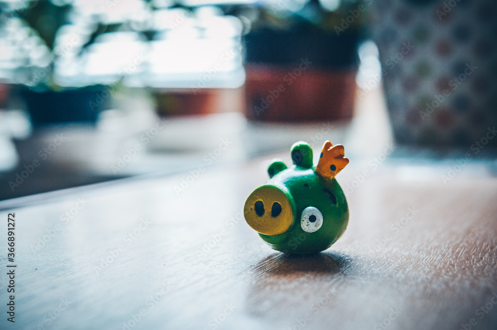

Historia de los videojuegos
Los videojuegos no tienen un origen exacto, pero la industria comenzó a tomar forma en la década de 1970 con empresas como Atari, que fue fundada en 1972 y trajo éxitos para las máquinas de Arcade, como "Space Invaders", "Galaxian" y "Pac-Man".
En la década de 1980, la industria de los videojuegos colapsó debido a la producción rápida de peores videojuegos cada vez. Sin embargo, la industria fue revivida con la llegada de la Nintendo Entertainment System en 1985.
En la década de 1990, comenzó la cuarta generación de consolas con el lanzamiento de la Sega Genesis y la Super Nintendo Entertainment System, que dieron lugar a la rivalidad entre Sonic y Mario.
En 1993, Mortal Kombat generó controversia por su contenido violento, lo que llevó a la creación del Entertainment Software Rating Board.
Siendo en la mitad de la década de 1990 donde la PlayStation de Sony y la Sega Saturn popularizaron el formato de CD para los videojuegos.
En el año 2001, Microsoft se sumó al mercado de Xbox.
La plataforma y el servicio de Steam se lanzó en el 2003, cambiando la forma en que los videojuegos eran distribuidos y consumidos.
En 2006, llegó la séptima generación de consolas, que permitió jugar videojuegos en alta definición y con un realismo nunca antes visto.
En 2009, los videojuegos comenzaron a popularizarse en teléfonos móviles con juegos como Angry Birds y Farmville.
En 2017, el juego "Fortnite" se convirtió en un fenómeno cultural, con más de 200 millones de jugadores registrados en todo el mundo.

En los últimos años, los videojuegos han seguido evolucionando y creciendo en popularidad, con nuevas tecnologías como la realidad virtual y la realidad aumentada que brindan experiencias de juego aún más inmersivas.

En la actualidad, los videojuegos no solo son un pasatiempo, sino también una forma de arte y una industria multimillonaria en constante crecimiento y expansión.

Para mas informacion visita